Héritage berbère et esprit du désert
Le Gouvernorat de Médenine est l'un des 24 gouvernorats de la Tunisie, situé dans le sud-est du pays. Il est connu pour sa position stratégique en Méditerranée et comme une porte d'entrée vers le grand Sud tunisien, incluant Djerba et Zarzis.
Médenine est située dans le sud-est de la Tunisie, partageant ses frontières avec la Libye à l'est, le gouvernorat de Gabès au nord, Tataouine au sud et Kébili à l'ouest. Son relief se compose de trois zones naturelles distinctes : une zone montagneuse (les montagnes de Beni Khedache), la plaine de Djeffara et une zone côtière étendue.
L'histoire de Médenine est riche et ancienne, comme en témoignent les ruines de l'époque romaine de Gigthis près de la ville. La région a été un point stratégique majeur à travers les époques. Après des périodes d'instabilité, la sécurité est revenue au début du XVe siècle, encourageant les Berbères à s'installer dans la plaine de Jefara et sur l'île de Djerba, souvent sous l'influence de cheïkhs almoravides venus propager leur foi.
Un grenier collectif fortifié berbère spectaculaire, souvent considéré comme le mieux conservé de Tunisie.
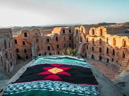
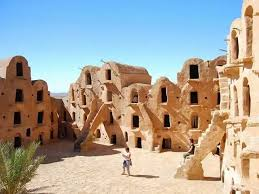
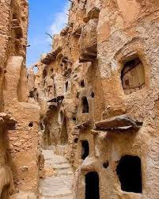
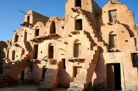
Un autre ksar impressionnant, connu pour avoir servi de lieu de tournage pour des scènes de Star Wars.
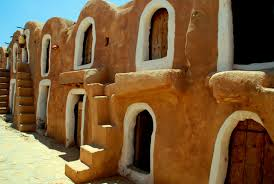
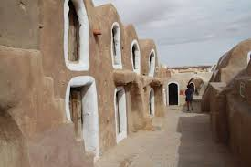
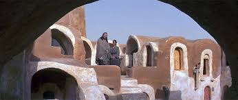
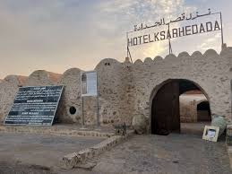
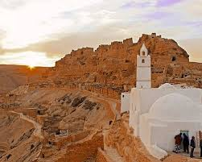
Bien qu'il s'agisse d'un ksar, il mérite une mention distincte pour son petit musée ethnographique bien entretenu, qui offre un aperçu des coutumes locales pour un prix modeste.
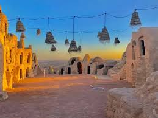
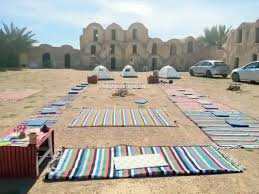
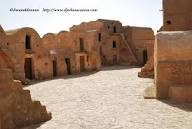
Situé sur l'île voisine de Djerba, ce complexe comprend un musée du patrimoine traditionnel djerbien, un village artisanal et une ferme aux crocodiles.
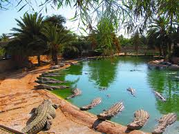
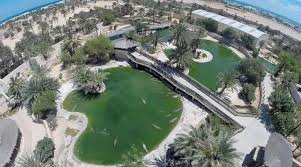
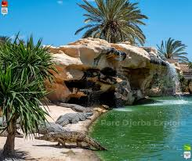
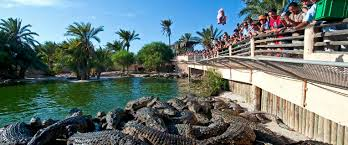
Un grand musée d'art et de traditions islamiques situé dans le complexe Djerba Explore Park.
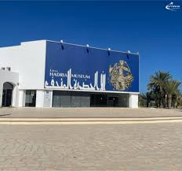
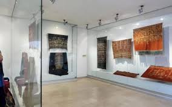
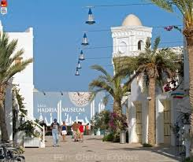
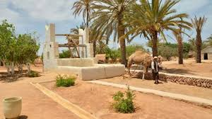
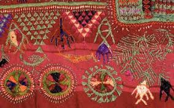
Houmt Souk est la capitale administrative et le cœur battant de l'île de Djerba en Tunisie.Cette ville reste une destination incontournable pour son atmosphère authentique, ses marchés animés et son riche patrimoine historique.
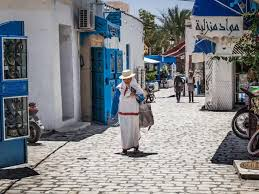
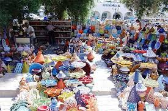
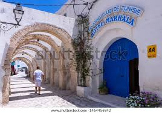
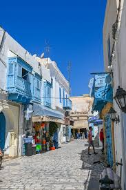
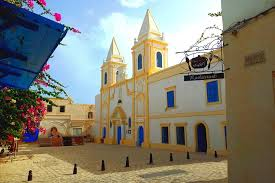